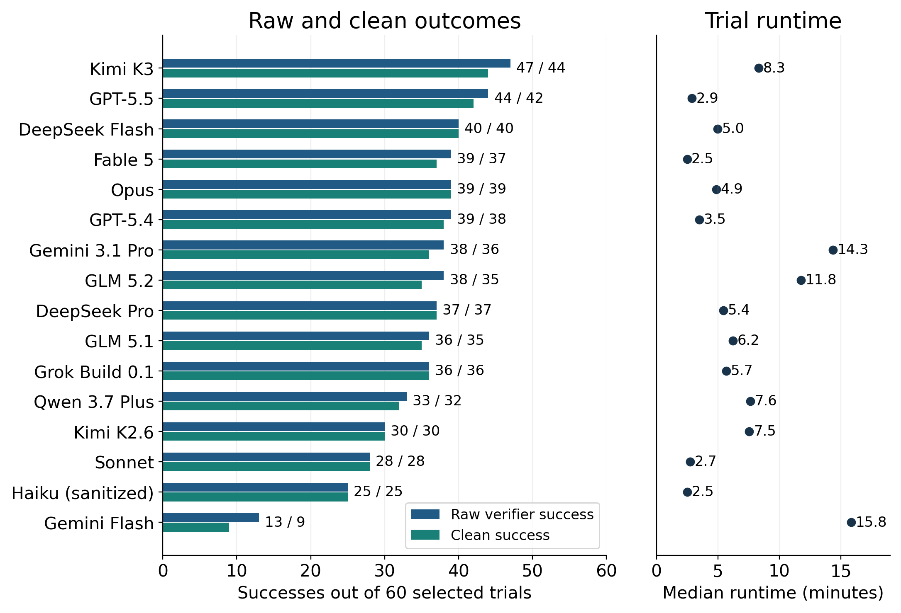
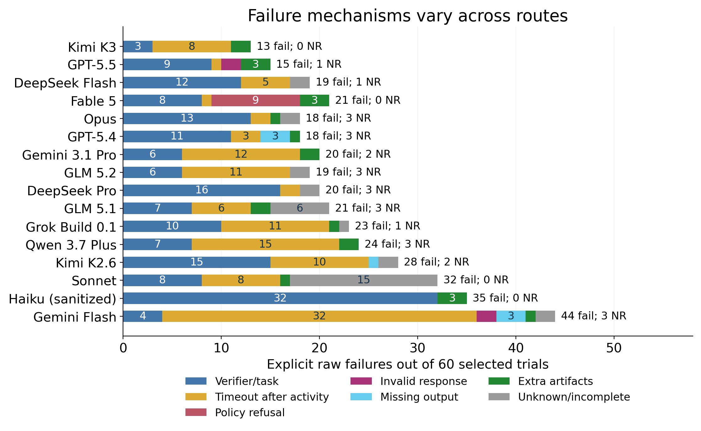

What the findings support
Value reference
DeepSeek V4 Flash40/60 raw; 40/60 clean
$1.08 for 60 trials
298.7 seconds median runtime
Qualified rate estimate; 40 of 60 attempts are both raw and clean successes.
Highest observed score
Kimi K347/60 raw; 44/60 clean
$26.57 for 60 trials
499.1 seconds median runtime
Qualified estimate with incomplete dated-pricing provenance; timeout risk remains material.
Exact billing and faster runtime
GPT-5.544/60 raw; 42/60 clean
$48.60 for 60 trials
173.4 seconds median runtime
Exact selected-run provider bill; shorter retained median runtime than Kimi K3.
The Kimi K3 versus GPT-5.5 raw lead is three successes. A task-based exploratory resampling interval includes zero; statistical superiority is not established. The cost/quality frontier is a description of qualified point values, with runtime, refusal risk, and cost uncertainty considered separately.


How testing worked
An arm is a model, provider, and API-route configuration. A trial is one attempt at one task. Each arm ran 20 selected Terminal-Bench 2.0 tasks with three attempts per task, for 60 trials. This is a manually selected public subset, not the entire dataset or a random production-workload sample.
Execution and scoring
Harbor is the runner that orchestrates task containers. Claude Code is the agent application: it uses terminal/file tools and sends model requests through LiteLLM, the gateway that adapts requests for the configured backend APIs. Task-specific verifier tests determine raw reward. A separate evidence layer stores and reviews results, transcripts, trajectories, and costs; the dashboard does not rescore correctness.
What “same harness” means
The same agent application was used, with seven recorded Claude Code versions across these runs. Tool restrictions and the Haiku compatibility path also differ. The Haiku sanitizer removes submitted thinking/effort fields. All retained configurations deny WebSearch and WebFetch; some also deny interactive planning/question tools. Identical binaries, hardware, reasoning budgets, retries, or randomized execution order are not established. Tool restrictions do not prove full network isolation.

The original core remains 15 arms, 900 trials, and 515 raw successes. Kimi K3 adds 60 trials and 47 raw successes to form the extended comparison; it is a Phase-3-compatible addendum, not Phase 4. Phases 1/2 remain frozen and Phase 3 remains closed.
Costs: evidence strength changes the interpretation
The extended selected-cost sum is $343.45. It combines two exact provider bills, two exact retained-usage reconstructions, seven estimates, and five lower bounds. It is neither an exact total invoice nor a global lower bound. The earlier historical accounting is preserved in the full report.
Exact billing and reconstruction
GPT-5.4 and GPT-5.5 have selected-run provider-billed totals. The two other “exact” reporting relations reconstruct complete retained usage under accepted rates; they are not retained invoices. An exact aggregate bill does not establish dollars per trial or failure outcome.
Estimates, bounds, and absence
Estimates retain pricing, usage, or allocation qualifications. Lower bounds can increase if unresolved usage is recovered. GLM 5.1 is a partial estimate. Six arms have accepted absence in the standardized provider-evidence layer; that means unavailable qualifying evidence, not zero cost.

All 16 selected runs
Displayed USD values are rounded to cents. Source-precision values remain in the downloadable data. Cost / clean success is the arm total divided by its clean count, not an allocation of billed cost to particular successful trials.
| Configuration | Provider | Raw / 60 | Clean / 60 | Selected cost | Cost / clean | Cost evidence | Outcome allocation |
|---|---|---|---|---|---|---|---|
| Kimi K3 | Moonshot / Kimi | 47 | 44 | $26.57 | $0.60 | Qualified rate estimate | Unavailable: no reviewed outcome join |
| GPT-5.5 | OpenAI | 44 | 42 | $48.60 | $1.16 | Exact provider bill | Unavailable: provider aggregate |
| DeepSeek V4 Flash | DeepSeek | 40 | 40 | $1.08 | $0.03 | Qualified rate estimate | Available under reviewed basis |
| Claude Fable 5 | Anthropic | 39 | 37 | $64.81 | $1.75 | Exact retained-usage reconstruction; no invoice | Available under reviewed basis |
| Claude Opus 4.7 | Anthropic | 39 | 39 | $50.29 | $1.29 | Retained-usage lower bound | Available under reviewed basis |
| GPT-5.4 | OpenAI | 39 | 38 | $29.79 | $0.78 | Exact provider bill | Unavailable: provider aggregate |
| Gemini 3.1 Pro Preview | Google Gemini | 38 | 36 | $19.70 | $0.55 | Qualified rate estimate | Available under reviewed basis |
| GLM 5.2 | Z.AI / GLM | 38 | 35 | $8.90 | $0.25 | Qualified rate estimate | Available under reviewed basis |
| DeepSeek V4 Pro | DeepSeek | 37 | 37 | $1.90 | $0.05 | Qualified rate estimate | Available under reviewed basis |
| GLM 5.1 | Z.AI / GLM | 36 | 35 | $5.33 | $0.15 | Partial estimate; cache classification unresolved | Available under reviewed basis |
| Grok Build 0.1 | xAI | 36 | 36 | $6.42 | $0.18 | Retained-usage lower bound | Available under reviewed basis |
| Qwen 3.7 Plus | Alibaba / Qwen | 33 | 32 | $2.50 | $0.08 | Retained-usage lower bound | Available under reviewed basis |
| Kimi K2.6 | Moonshot / Kimi | 30 | 30 | $6.35 | $0.21 | Qualified rate estimate | Available under reviewed basis |
| Claude Sonnet 4.6 | Anthropic | 28 | 28 | $38.39 | $1.37 | Retained-usage lower bound | Available under reviewed basis |
| Claude Haiku 4.5 | Anthropic | 25 | 25 | $16.70 | $0.67 | Exact retained-usage reconstruction; no invoice | Available under reviewed basis |
| Gemini 3.5 Flash | Google Gemini | 13 | 9 | $16.12 | $1.79 | Retained-usage lower bound | Available under reviewed basis |
Failure mechanisms matter
The 960-trial comparison contains 370 explicit raw failures and 28 not-recorded outcomes. The accepted seven-category display partitions only the 370 explicit failures. Another 19 timeout-bearing trials succeeded; an exception and a failure are not interchangeable.
Different routes, different obstacles
- Fable: all nine reviewed provider-policy refusals occur here, across three tasks with three attempts each. No hypothetical success is credited.
- Gemini Flash: 32 of 44 explicit failures follow meaningful activity and a timeout.
- Sanitized Haiku: 32 of 35 explicit failures are verifier/task failures.
- Kimi K3: eight of 13 explicit failures are timeouts after activity; three additional timeout-bearing trials pass.
Where explanations remain incomplete
The 34 residual failures include 27 complete-evidence/no-substantive-attempt cases and seven incomplete/indeterminate cases. Across the whole review, 911 trials have complete/high-confidence evidence and 49 have incomplete/medium-confidence evidence. Router observability remains unknown; the review cannot uniquely locate blame in a model, provider, or gateway.


Task profiles constrain the shortlist
Kimi K3's aggregate lead does not extend to every task family. Among four illustrative alternatives it leads on the scientific and machine learning group, but records 0/3 on language implementation and 2/6 on systems tasks. GPT-5.5 records 2/3 and 3/6 on those groups. GLM 5.2's security strength coexists with 0/3 on the single asynchronous-programming task.
These are retained heuristic groups, sometimes only one task each. They support workload-specific questions and counterexamples, not dependable production-routing rules. Full task-family results and heatmap.
What token evidence can tell us
Caching is economically material
Provider aggregates show 93.98% cached input for GPT-5.4 and 93.77% for GPT-5.5, while historical benchmark-side cache counters were zero. DeepSeek Flash's qualified selected harness evidence shows 97.82%. Kimi K3's 95.86% share comes from a broader, unallocated provider log. Cache-read tokens are a subset of total input and must not be added twice.
Events are not reasoning tokens
868 of 960 reviewed trials record thinking/reasoning event metadata. These counters are not token counts, billed reasoning volume, or comparable reasoning steps. The evidence does not establish a common 16-arm reasoning-versus-final-answer token split. A recorded zero does not prove no internal reasoning or no spend.
Generated output also has different associations by arm. In retained positive-usage observations, Flash's median output is 5,442.5 tokens on successes and 35,036 on non-successes; GPT-5.5 shows 6,033 versus 4,735, with usage observed in 14 of its 16 non-successes. Task difficulty, timeouts, and missing evidence confound these groups. More output is not a universal quality signal or a demonstrated causal effect. Token definitions, source scopes, and all supporting figures.
Challenges, mitigations, and remaining uncertainty
- Task selection and dependence: exact task/attempt identity is checked; comparisons and task-based resampling stay exploratory. Three attempts are not 60 independent task draws.
- Configuration and exposure: retained versions and tool denials are audited. Public tasks, historical web-tool events, and incomplete isolation/control records limit causal and contamination-free claims.
- Accounting: source authority, chronology, missing usage, and unsupported trial/outcome allocations remain explicit.
- Verification access: results reproduce committed, hash-bound review data. Full Phase 3 raw artifacts, original private provider exports, live DB/R2 inventory, and all 16 live dashboard surfaces were not freshly verified.
The full paper pairs nine challenges with actual mitigations and residual uncertainty. Read the challenge-and-mitigation table.
Report, data, and source authority
The manuscript controls over its reading copies. Its source chronology preserves the July closeout, August 21 correction, August 25 provider-aware ledger, August 28 consistency contract, and August 31 handoff. This website consumes those sources; it does not modify benchmark outcomes or allocate costs more precisely than the evidence permits.